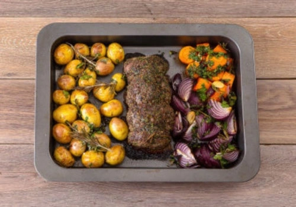

Ростбиф Тендерлойн с соусом из лесной клюквы
Первое правило приготовления качественного ростбифа – это правильно выбранная говяжья вырезка.
Note
Время готовки – 70 минут. БЖУ – 7 / 3 / 10
Ингредиенты
Ингредиенты (4 порции):
Говядина вырезка – 760 гр.
Картофей мини (бейби) – 1 кг.
Лук красный (салатный) – 3 шт.
Морковь свежая – 3 шт.
Мёд порционный – 40 гр. (2 порции)
Петрушка свежая – 30 гр.
Розмарин свежий – 8 гр. (1 пучок)
Смесь “3 перца” дроблёная – 5 гр.
Чеснок свежий – 3 зуб.
Горчица “Дижонская” – 30 гр.
Горчица зернистая – 30 гр.
Соус из лесной клюквы – 200 мл.
Инструменты:
Духовка
Силиконовая перчатка
Овощечистка
Миска
Кухонный нож
Разделочная доска
Форма для запекания
Сотейник
Приготовление

Разогрейте духовку до 180°C. Морковь и лук очистите. Морковь нарежьте брусочками, лук – дольками. Чеснок раздавите и очистите. Листочки петрушки отделите от стеблей и нарубите мелко. Картофель тщательно помойте.
Смажьте протвинь оливковым маслом, на него выложите картофель, морковь, лук, чеснок, 1/3 нарубленой петрушки, веточки розмарина, посолите, поперчите, сбрызните оливковым маслом, перемешайте и поставьте запекаться в разогретую духовку на 15 минут.
Разогрейте в сковороде 2 столовые ложки оливкового масла и обжарьте мясо 1 минуту на сильном огне с одной стороны, переверните и жарьте 1 минуту с другой стороны, переверните набок и жарьте 1 минуту, затем переверните на другой бок и жарьте ещё 1 минуту.
Для приготовления медово-горчичной глазури в миску выложите мёд, дижонскую и зернистую горчицы и перемешайте.
Обжаренную говядину посолите, обмажьте медово-горчичной глазурью, запанируйте в смеси “3 перца” и посыпьте 1/3 нарубленной петрушки.
Достаньте противень из духовки, рядом с овощами выложите говядину и поставьте всё вместе запекаться в духовку на 30 минут (по нашему рецепту мясо получается прожарки medium well. Если вы хотите получить прожарку medium запекайте на 5 минут меньше, если же вы хотите получить прожарку well done запекайте на 5 минут дольше). Достаньте противень из духовки и дайте ростбифу “отдохнуть” в течение 5 минут.
Соус из лесной клюквы перелейте в сотейник и прогрейте на среднем огне 1 – 2 минуты.
Ростбиф нарежьте на ломтики и разложите по тарелкам, рядом выложите запеченные овощи, посыпьте их оставшейся петрушкой и подавайте с клюквенным соусом.
Автор рецепта – Лодыгина Юлия, шеф-повар chefmarket.ru